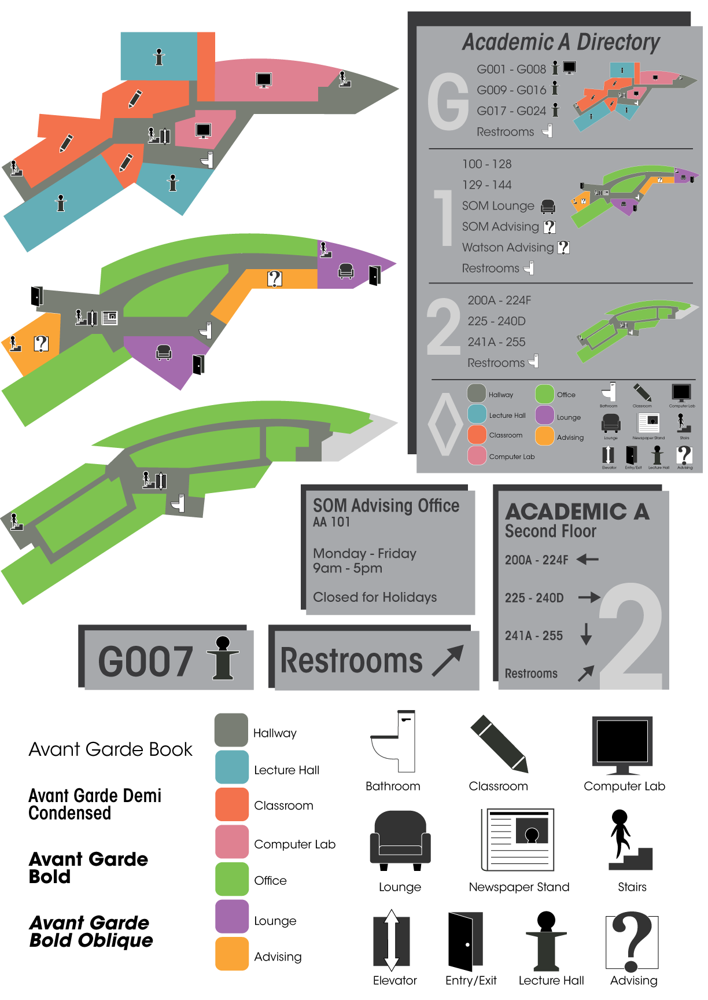

This poster was designed for my Graphic Design II course at Binghamton University. The objective was to create a wayfinding system for an area on campus. I chose to focus on Academic Building A as it has a unique shape, and I had also found myself lost there many times. I created a cohesive design using bold colors and simple shapes and text to create a system that is functional, yet interesting to look at. I wanted to stray from more traditional colors that one may think of when thinking of a business school, and I feel that I was able to achieve this.
